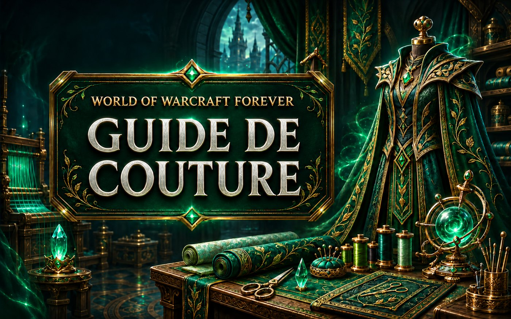

News › Correctifs du 11 novembre
Correctifs du 11 novembre : Jugement du paladin, sacs de couture
12 novembre 2026
Après la grosse mise à jour du 11 novembre, Blizzard a enchaîné avec une petite série de correctifs. Les paladins et les couturiers sont les premiers concernés.

Classes
- Paladin : le Jugement compte désormais comme une attaque à distance. Il utilise ton toucher à distance et ne déclenche plus les effets « en mêlée » des objets.
- Paladin Vengeance : Unbound Wrath ne crée plus d'échos avec le totem Furie-des-vents déclenché par Frappe sacrée.
- Chasseur : Salve ne déclenche plus d'effets et s'arrête bien quand tu bouges.
- Prêtre : l'Éclair déconcertant des gnomes et Twilight Focus fonctionnent en Forme d'ombre.
- Druide Farouche et Chaman : petites corrections (Traquenard et Griffure, Totem Langue de feu rang 2).
Couture : les sacs coûtent un peu plus cher
| Sac | Places | Nouveau coût |
|---|---|---|
| Sac en laine verte / rouge | 10 | 5 étoffes de laine (au lieu de 4) |
| Sac en soie verte | 12 | 5 étoffes de soie (au lieu de 4) |
| Sac en soie noire | 12 | 6 étoffes de soie (au lieu de 5) |
| Sac en tisse-mage rouge | 14 | 5 rouleaux de tisse-mage (au lieu de 4) |
Le reste
- Récupération d'objets : le service est désactivé le temps de corriger un bug.
- Rivages Chatoyants : plusieurs ennemis du Crépuscule frappent beaucoup moins fort.
- Quêtes débloquées : Diversions écarlates (Maleterres de l'Ouest), Le Géant de la tanière (Hautes-terres d'Arathi) et Liberté pour toutes les créatures (Féralas).
- On peut de nouveau monter sur sa monture à Shen'dralas.
Source : JudgeHype, d'après les notes de correctifs de Blizzard du 11 novembre 2026.